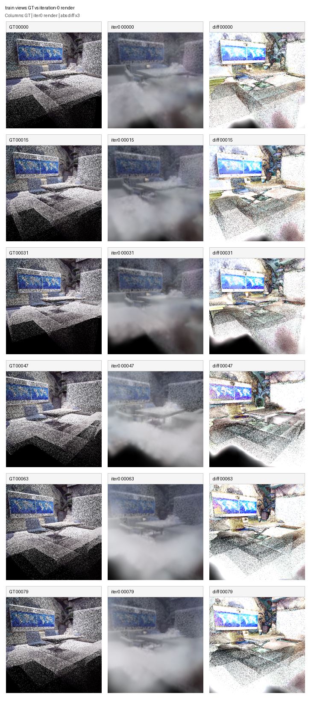
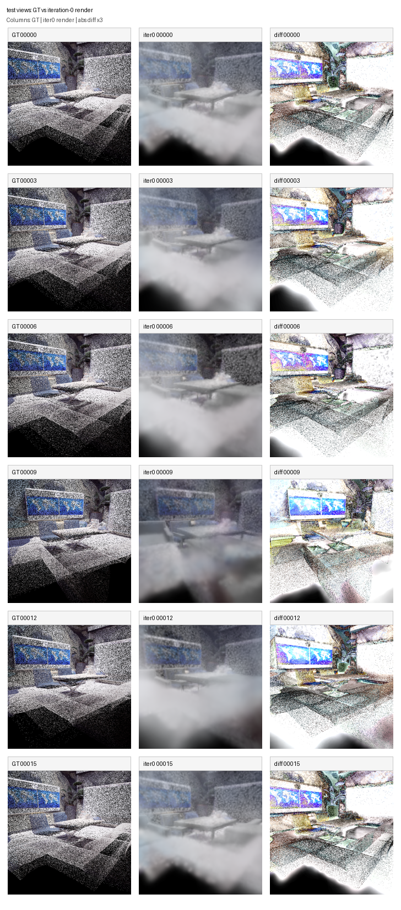
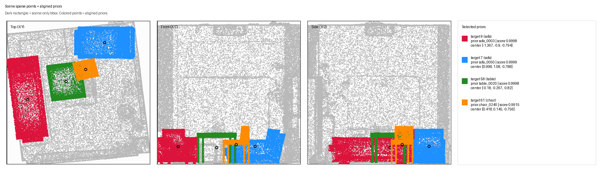
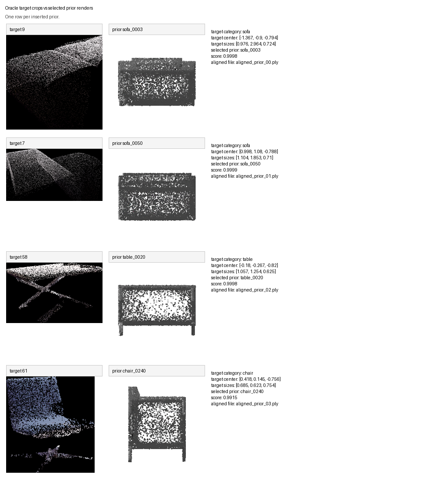

backend run: /home/ilhyeonchu/ReCompose3D/PriorProbe3DGS/outputs/backend_runs/oracle_prior_vanilla_3dgs_multi_mean_rgb_alignfix_v2_15000/office_0
scene root: /mnt/3dgs-ssd/3dgs-stage/priorprobe3dgs/replica_colmap_multi/office_0
| Scene | office_0 |
|---|---|
| Initialization | from_scratch |
| Selected priors | sofa_0003, sofa_0050, table_0020, chair_0240 |




| Target | Category | Prior | Score | Aligned PLY |
|---|---|---|---|---|
| 9 | sofa | sofa_0003 | 0.9998 | aligned_prior_00.ply |
| 7 | sofa | sofa_0050 | 0.9999 | aligned_prior_01.ply |
| 58 | table | table_0020 | 0.9998 | aligned_prior_02.ply |
| 61 | chair | chair_0240 | 0.9915 | aligned_prior_03.ply |